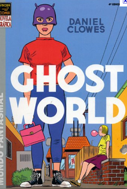
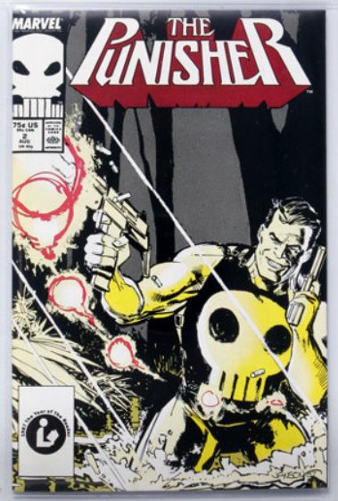
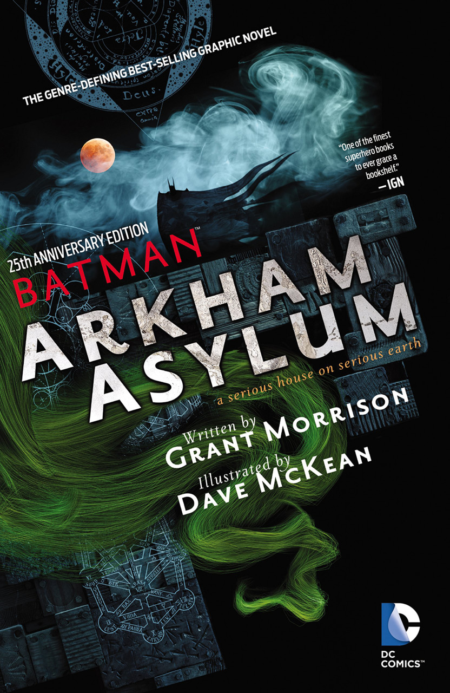
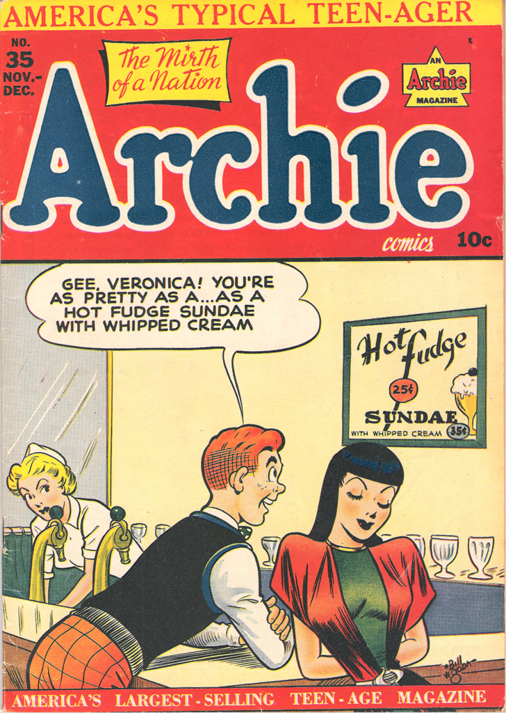
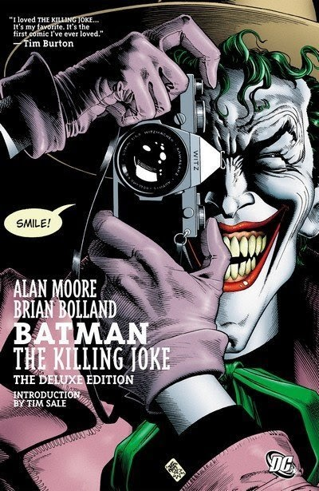

Ghost World is a graphic novel by Daniel Clowes. It was serialized in issues #11–18 of Clowes's comic book series Eightball, and was published in book form in 1997 by Fantagraphics Books. It was a commercial and critical success and developed into a cult classic.
The Punisher is shown as a formidable fighter, skilled marksman, and able strategist. All he reveals about himself is that he is a former U.S. Marine. He has a fierce temper but also shows signs of considerable frustration over his self-appointed role of killer vigilante.
Arkham Asylum: A Serious House on Serious Earth is a Batman graphic novel written by Grant Morrison and illustrated by Dave McKean. It was originally published in the United States in both hardcover and softcover editions by DC Comics in 1989.
Archie lives in Riverdale, where he attends Riverdale High School. Archie is a typical small-town teenager. His main crush is vocalist/keyboardist Veronica Lodge, but he is also fond of vocalist/guitarist/percussionist Betty Cooper, forming the love triangle driving many of the comic's plot lines.
Batman: The Killing Joke is a 1988 DC Comics one-shot graphic novel featuring the characters Batman and the Joker written by Alan Moore and illustrated by Brian Bolland. The Killing Joke provides an origin story for the supervillain the Joker, loosely adapted from the 1951 story arc "The Man Behind the Red Hood!".